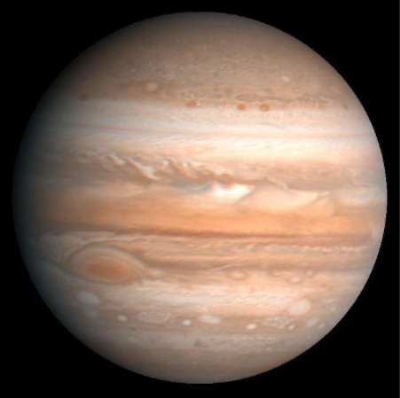

Es un planeta gigantesco: su tamaño es 1300 veces mayor que la Tierra. Tiene muchos satélites
naturales y los más importantes son Ío, Europa, Ganimedes y Calisto.
Su nombre es en honor a Júpiter, el dios más importante de la mitología romana.

>